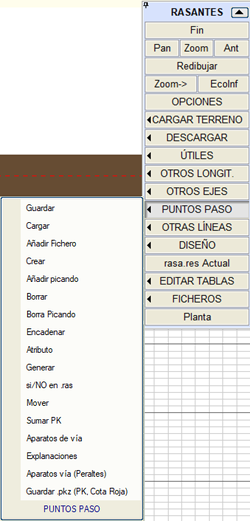
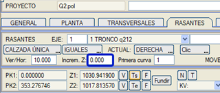
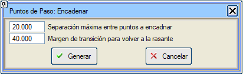
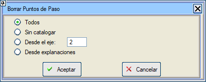
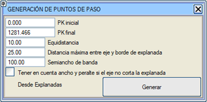

Genel Bilgiler
Kırmızı Kot menüsünde bulunan ve geçiş noktalarına atıfta bulunan bir dizi aracı yöneten bir araçtır, bunları aşağıda ele alacağız.
Geçiş noktası ile kırmızı kot arasındaki kot farkının değerine, iletişim kutusunda bildirilen Kot Artışı değeri eklenir. Böylece bu değer, yakalama noktası ile kırmızı kot arasındaki farka karşılık gelir.

Kaydet
Yükle
Dosya Ekle
Oluştur
Tıklayarak Ekle
Sil
Tıklayarak Sil
Zincirle
Öznitelik
Oluştur
k.kotta evet/Hayır
Taşı
KM Ekle
Makas
Tesviye Yüzeyleri
Makaslar (Deverler)
.pkz Kaydet (KM, Kırmızı Kot Farkı)
Kaydet
Kırmızı Kotlar menüsünde tanımlanan olası geçiş noktalarını .pas uzantılı bir dosyaya kaydetmeyi sağlar.
Yükle
Seçtiğimiz geçiş noktaları dosyasını yükler ve önceden var olan tüm geçiş noktalarını siler.
Dosya Ekle
Mevcut geçiş noktalarına, daha önce bir .pas dosyasında kaydedilmiş yeni geçiş noktaları ekler.
Oluştur
Geçiş noktalarının altına kırmızı kot ile olan kot farkı etiketlenir. Geçiş noktası, mevcut kırmızı kotla (sağ, sol, hendekler, yardımcı,....) olan kot farkı. Varsayılan olarak mevcut kırmızı kotun kotu sunulur.
Tıklayarak Ekle
"Tıklayarak Ekle" seçeneği, "Oluştur" gibidir ancak KM ve Kot, ekranda interaktif bir tıklamadan alınır. Bu seçenek döngüsel hale gelir. Çıkmak için Esc tuşuna veya iptal düğmesine basılabilir.
Zincirle
Ekranda bulunan geçiş noktalarının sırasını takip ederek bir dizi kırmızı kot elemanı oluşturur.
Zincirlenecek noktalar arasında maksimum ayırma: Farklı platformlara karşılık gelen geçiş noktası gruplarını ayrı ayrı zincirlemeyi sağlar.
Kırmızı kota geri dönmek için geçiş payı: Eğer Bir kırmızı kotu araziye uydur aracıyla elde edilen gibi önceden bir kırmızı kot varsa, bu kırmızı kota her bir geçiş noktası zincirini ekler, bu platform ile önceki kırmızı kot arasında bir geçiş yapmak için tanımlanmış bir pay kullanarak.

Öznitelik
Geçiş noktasıyla ilişkili metni değiştirmeyi sağlar.
Sil
Geçiş noktalarını silmeyi sağlar. Her geçiş noktası oluşturulduğunda, kökeni bir öznitelik olarak kaydedilir (başka bir eksenden mi, yoksa bir tesviye yüzeyinden mi geldikleri). Görünen iletişim kutusunda, aynı kökene sahip tüm geçiş noktalarını silebiliriz.

Tıklayarak Sil
Bu seçenek, geçiş noktalarını grafiksel seçim yoluyla tek tek silmeyi sağlar.
Oluştur
Başka bir eksenden yansıtılan geçiş noktalarını mevcut eksen üzerinde oluşturmayı sağlar. Hesaplama, oluşturma veya çıkış için verileri değiştirmeyi sağlayan bir iletişim kutusu açar.

Aynı kırmızı kot üzerinde:
Geçiş noktalarını mevcut kırmızı kot üzerine yerleştirir, bu da bu kırmızı kot değiştirildiğinde kot farkının kontrol edilmesini sağlar.
Demiryollarında, oluşturma seçeneği her iki eksenin deverlerini kullanmayı sağlar. Bu durumda kırmızı kot, rayların düzlemini takip ederek ve mevcut eksenin alçak rayının teorik konumuna kadar yansıtılır.
Dönme ekseninin yatay ötelemesinde değerleri olan eksenler için, geçiş noktasının dönme ekseninin konumuna yansıtılmasına izin verilir.
k.kotta evet/HAYIR
Varsayılan olarak HAYIR seçeneği etkinken, geçiş noktaları kırmızı kot dosyasına (.ras) kaydedilmez. Seçenek EVET olarak değiştirilirse, geçiş noktaları kırmızı kotla birlikte .ras dosyasına kaydedilir.
Taşı
Geçiş noktalarını Taşıma imkanı, yeni konumu grafiksel olarak veya yeni koordinatları (KM,Kot) yazarak verilebilir.
KM Ekle
Belirli bir KM aralığındaki tüm geçiş noktaları için "KM Ekle" aracı.
Makas
Bu araç, mevcut eksenin bir elemanı olarak tanımlanan her makas için üç geçiş noktası oluşturur: Dil Ucu Birleşimi, Matematiksel Merkez ve Topuk, makasın dayandığı eksenin kotlarıyla.
Tesviye Yüzeyleri
Bu araç, tesviye yüzeylerinden geçiş noktaları türetmeyi sağlar, tesviye yüzeyinin konturunu ve yüzeyini (eğer dahil edilmişse) dikkate alarak (Tesviye Yüzeyleri iletişim kutusunda tanımlandığı gibi). Eğer tesviye yüzeyi eksenin bir tarafındaysa, tesviye yüzeyinin eğimi dikkate alınır. Ayrıca, tesviye yüzeyinin eğimini sadece platform kenarına (kod 2) kadar götürmek ve bu noktadan eksene kadar platformun deverini kullanmak da mümkündür.

Makaslar (deverler)
Sapmalı hattın eksenine konumlanırsak, bu araç J.C.A, C.M. ve Topuk noktalarında, ana hattın alçak rayının kırmızı kotunu, sapmalı hattın alçak rayı üzerine ve ana hattın deverini takip ederek yansıtır. Sapmalı hattın, alçak rayının ne olduğunu bilebilmek için önceden ana hatta benzer bir devere sahip olması gerekir. FFCC_BIM.isa örneğinde bu araç, ilk makasın eğimli ve 140mm deverli olduğu eksen 2 için kullanılmıştır.
.pkz Kaydet (KM, Kırmızı Kot Farkı)
Mevcut geçiş noktalarını KM ve kırmızı kot farkına göre listeleyen bir .pkz dosyası oluşturur.
|